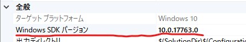

文字列型のマーシャリングには、Marshal::StringToHGlobalAnsi()を使う事ができます
しかし、一方通行であり、汎用性が今ひとつに感じていました。頭を整理してみました。
C++では文字列は、たいていchar（マルチバイト文字列※1）もしくは、wchar_t（世界標準のワイド文字列※1）で処理されます。
これらは、C++のプリミティブ型1次元配列でです。
なので、この二つの型（char、wchar_t）に対するC#の型があれば、やり取りできるはずです。
| C# | C++/CLI | C++ | 備考 |
|---|---|---|---|
| signed char | sbyte | String::SByte | 8ビット符号付整数 |
| char | String::Char | wchar_t | C#でのcharは16ビット（2バイト）。 インテリセンスでは、 「Unicode文字を表します」と表示されます。 |
C#で文字列を扱うのに一般的なstringを、c#のcharやsbyteに変換できれば、pin_ptrやGCHandleを使って、ポインタ渡しでC#とC++間のやり取りを行うことができます。
私は、stringにおけるToCharArray()メソッドを利用します。
C#におけるstring⇔char
// string ⇒ char[]
string str = "abcあいう漢字";
char[] chrs = str.ToCharArray();
// char[] ⇒ string
char[] chrs2 = new char[] { 'a', 'b', 'c', 'あ', 'い', 'う', '漢', '字' };
string str2 = new string(chrs2);これだけで良いのです。
私はずいぶん長い間、stringやchar[]にも、文字コードがあると、大勘違いしてきました。（このページも長らく間違えた記載いをしていました。すいません。）
C#におけるstringとchar[]は、Unicode（UTF-16）なのです。つまり、stringとchar[]間の変換においては、文字コードについて考える必要はないのです。
C++においては、プロパティの全般の文字セットをUnicodeに設定する必要があります。
サンプルプログラム
サンプルソリューションをここに置いておきますので、参考にしてください。（サンプルプログラムにおける警告について）。
- 2022/02/06
- この記事を書いたのもずいぶん昔になりました。Windows10になり、「Windows SDK バージョン」に関するエラーが発生しましたら、プロパティページの以下の項目を変更してください。（NativeFuncとWrapperClassのプロジェクト）
